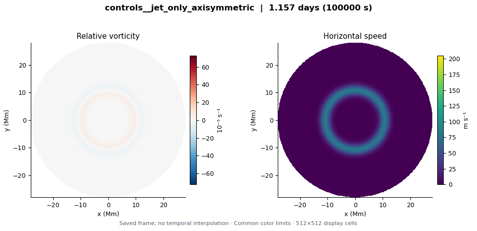
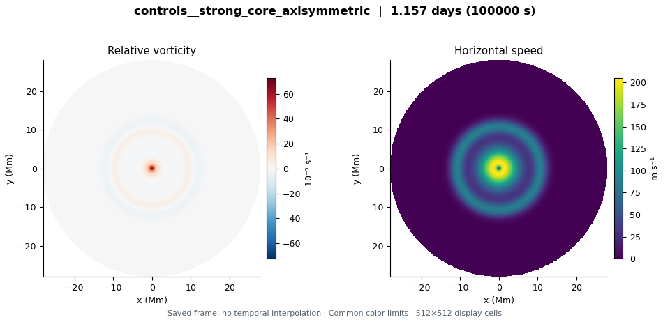

controls__jet_only_axisymmetric
LD 3.2 Mm · Upper circular jet × 0; upper cyclone × 0 · 1.1574 model days
Explore this run →Three unperturbed 1024² controls evolve for 100,000 seconds: the circular jet alone, the reference central cyclone, and a stronger central cyclone. All use a resting deep layer, a 3,200-km deformation radius and no convection. These check the numerical evolution of the regularized circular QG base flows before perturbation and hexagon-formation experiments. The stronger cores can have order-one vorticity relative to the Coriolis parameter, limiting interpretation as controlled QG approximations. Completion does not establish perturbation stability, reproduce the shallow-water hexagon or fit the observed phase speed.
These are exploratory simulations, not established Saturn hexagons. Read the initial condition and configuration differences before comparing runs.

LD 3.2 Mm · Upper circular jet × 0; upper cyclone × 0 · 1.1574 model days
Explore this run →LD 3.2 Mm · Upper circular jet × 0; upper cyclone × 0 · 1.1574 model days
Explore this run →
LD 3.2 Mm · Upper circular jet × 0; upper cyclone × 0 · 1.1574 model days
Explore this run →